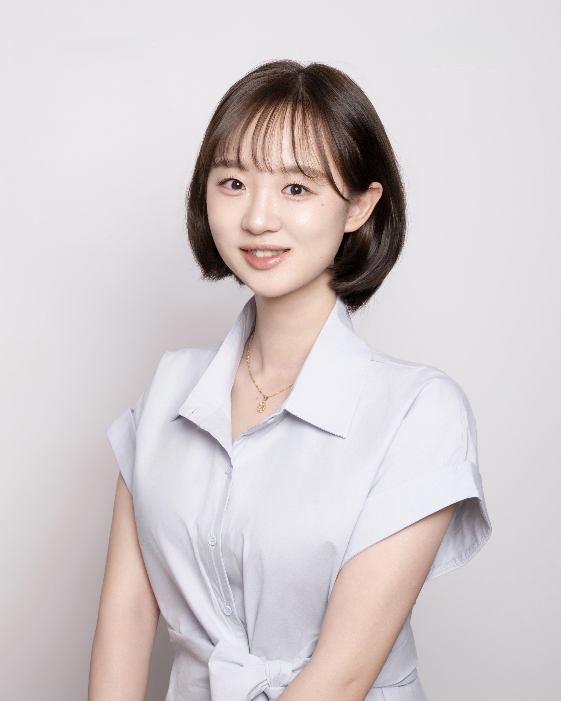

Department of Environmental Engineering and Science
Feng Chia University
Email:
yuilin@fcu.edu.tw
National Taiwan University (NTU), Taipei, Taiwan
Minor in Civil Engineering
National Taiwan University (NTU), Taipei, Taiwan
Department of Environmental Engineering and Science
Feng Chia University, Taichung, Taiwan
Department of Environmental Engineering
Eco Water-Energy Nexus Research Center
University of Seoul, Seoul, South Korea
Agricultural Net-Zero Technology and Management Innovation Research Center
National Taiwan University, Taipei, Taiwan
Clean Energy Research Laboratory
William G. Lowrie Department of Chemical and Biomolecular Engineering
The Ohio State University, USA
Applied Materials Division – Bioprocesses and Reactive Separations
Argonne National Laboratory, USA
Investigation of electrokinetic phenomena and advanced electrochemical processes for water treatment, resource recovery, and sustainable water technologies. Development and application of charged porous materials for ion transport, selective separation, and electrochemical processes.
Development of advanced numerical simulation models to optimize the performance and efficiency of chemical reactors in green technologies (e.g., fuel cells, carbon capture systems, or bio- reactors). By leveraging Computational Fluid Dynamics (CFD) and multiphysics coupling, the project aims to systematically evaluate and refine critical design parameters.
Innovative approaches for sustainable water management, including emerging contaminants, surface water, and the water–energy nexus.
19th International Conference on Environmental Science and Technology
College of Bioresources and Agriculture, National Taiwan University
Water Environmental Engineering Practice and Technology Seminar, The Chinese Institute of Environmental Engineering (CIEnvE)
28th Cross-Strait Water Conservancy Science and Technology Symposium (3rd place among 22 contestants)
3rd place among 83 teams; Team Leader
International Conference on Bioprocess and Sustainability 2024
2022 Taiwan Institute of Chemical Engineers (TwIChE) Conference
Environmental Engineering Practice and Technology Seminar, The Chinese Institute of Environmental Engineering (CIEnvE)
CTCI Education Foundation (2nd place among 60 teams)
CTCI Education Foundation
Student Oral Presentation Competition, Taiwan Agricultural Engineers Society (TAES) Conference (2nd place among 10 contestants)
潘述元、林育誼
A Method of Treating Discharge Containing Dissolved Salts and Acids
Pan, S-Y, Lin, Y-I
Taiwan (ROC) Invention Patent, No. I779847
B.S. Student
Research: Electrokinetic Processes
Undergraduate Student
Undergraduate Student